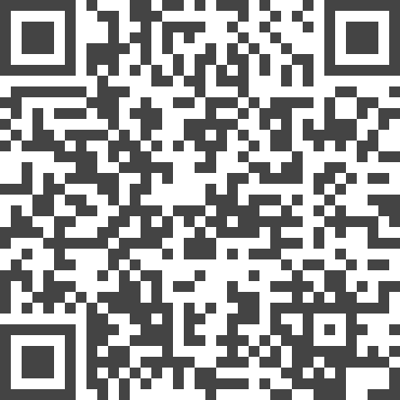

LSDvis: Hallucinatory Data Visualisations in Real World Environments
Authors. Ari Kouts, Lonni Besançon, Michael Sedlmair, Benjamin Lee
Venue. alt.VIS (2023)
Materials.
Abstract. We propose the concept of "LSDvis": the (highly exaggerated) visual blending of situated visualisations and the real-world environment to produce data representations that resemble hallucinations. Such hallucinatory visualisations incorporate elements of the physical environment, twisting and morphing their appearance such that they become part of the visualisation itself. We demonstrate LSDvis in a "proof of proof of concept", where we use Stable Diffusion to modify images of real environments with abstract data visualisations as input. We conclude by discussing considerations of LSDvis. We hope that our work promotes visualisation designs which deprioritise saliency in favour of quirkiness and ambience.
